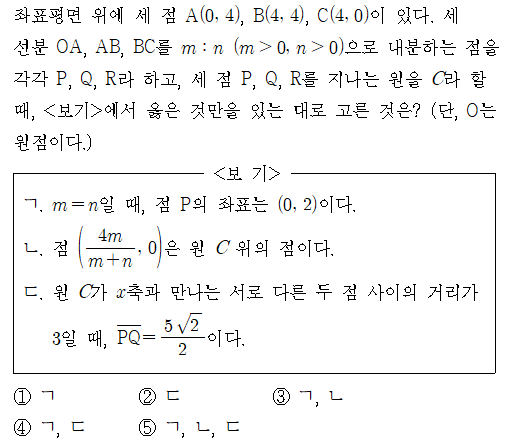

- 문제를 먼저 직접 풀어봅니다.
- 주어진 조건을 표시합니다.
- 풀이의 첫 줄을 어디서 시작할지 생각합니다.
- 막히는 지점을 체크해둡니다.
정답 확인
정답: ⑤ ㄱ, ㄴ, ㄷ
문항별 복습
1번. 실근 조건과 판별식
심정우T 손풀이 보기
수업 후 이곳에 손풀이 이미지를 추가합니다.
단계별 풀이 보기
1단계. 수업에서 먼저 본 것
이 문제는 계산보다 먼저 세 점과 내분점의 위치를 좌표로 정리하는 것이 핵심입니다.
2단계. 조건 해석
세 선분 OA, AB, BC를 같은 비율로 내분한다는 조건을 이용해 P, Q, R의 좌표를 각각 m, n으로 표현합니다.
3단계. 풀이의 첫 줄
먼저 P, Q, R의 좌표를 정리하고, 세 점을 지나는 원의 방정식을 세우는 것에서 출발합니다.
4단계. 핵심 전개
보기 ㄱ, ㄴ, ㄷ을 각각 좌표와 원의 방정식에 대입해 확인합니다. 특히 ㄷ은 원이 x축과 만나는 두 점 사이의 거리를 이용해 비율을 정리합니다.
5단계. 실수 포인트
내분점의 좌표를 잡을 때 m과 n의 위치를 바꾸면 이후 계산이 모두 틀어질 수 있습니다. 또한 ㄷ에서는 x축과 만나는 두 점의 거리 조건을 원의 방정식과 연결해야 합니다.
수업 영상 보기
수업 후 영상 링크와 문항별 시작 시간을 이곳에 추가합니다.
변형문제 보기
수업 후 같은 풀이 흐름으로 연습할 변형문제를 추가합니다.
1번. 실근 조건과 판별식
1단계. 수업에서 먼저 본 것
이 문제는 계산보다 먼저 주어진 조건이 무엇을 의미하는지 확인하는 것이 중요합니다.
2단계. 조건 해석
실근이 존재한다는 조건은 판별식 또는 그래프의 교점 조건으로 바꾸어 생각할 수 있습니다.
3단계. 풀이의 첫 줄
첫 줄에서는 문제의 조건을 식으로 정리하고, 어떤 값을 구해야 하는지 분명히 합니다.
4단계. 실수 포인트
판별식만 확인하고 문제에서 주어진 범위 조건을 빠뜨리면 오답이 될 수 있습니다.
2번. 함수의 그래프 해석
1단계. 수업에서 먼저 본 것
그래프 문제는 식을 바로 계산하기보다, 먼저 그래프가 어떤 조건을 나타내는지 읽어야 합니다.
2단계. 조건 해석
교점, 범위, 대칭성, 증가와 감소를 구분해서 문제의 핵심 조건을 정리합니다.
3단계. 풀이의 첫 줄
그래프에서 읽은 조건을 식으로 옮기고, 필요한 값을 차례대로 계산합니다.
4단계. 실수 포인트
그래프의 모양만 보고 판단하지 말고, 문제에서 요구한 값이 무엇인지 마지막에 다시 확인해야 합니다.